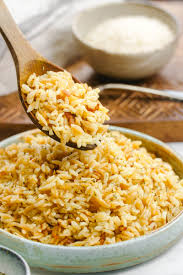

Wilson
Education
Favorite Place
Favorite Thing To Do
Eating Rice Pilaf

Rice Pilaf is probably my favorite dish containing rice. I really enjoy eating Rice Pilaf because it taste good and has a nice texture. Rice Pilaf!